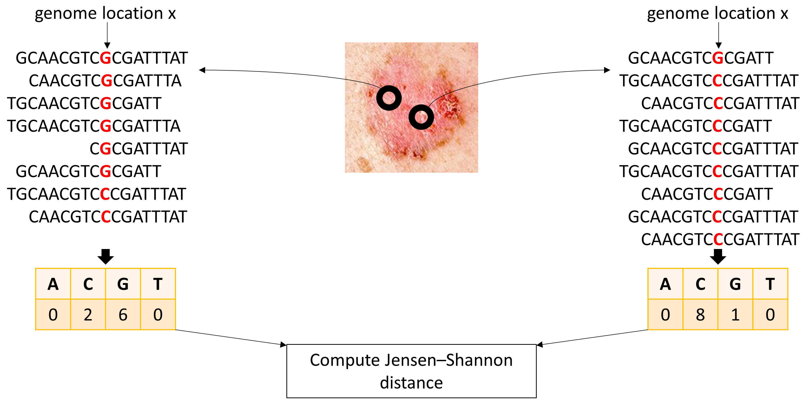

Research projects
SPIRAL: Significant Process InfeRence ALgorithm for single cell RNA-sequencing and spatial transcriptomics
Gene expression data holds the potential to shed light on multiple biological processes at once. However, data analysis methods for single cell sequencing mostly focus on finding cell clusters or the principal progression line of the data. Data analysis for spatial transcriptomics mostly addresses clustering and finding spatially variable genes. Existing data analysis methods are effective in finding the main data features, but they might miss less pronounced, albeit significant, processes, possibly involving a subset of the samples.
In this work we present SPIRAL, an algorithm based on Gaussian statistics to detect all statistically significant biological processes in single cell, bulk and spatial transcriptomics data. The algorithm outputs a list of structures, each defined by a set of genes working simultaneously in a specific population of cells. SPIRAL is unique in its flexibility: the structures are constructed by selecting subsets of genes and cells based on statistically significant and consistent differential expression. Every gene and every cell may be part of one structure, more or none. SPIRAL also provides several visual representations of structures and pathway enrichment information. We validated the statistical soundness of SPIRAL on synthetic datasets and applied it to single cell, spatial and bulk RNA-sequencing datasets.

Inferring single-cell and spatial microRNA activity from transcriptomics data
The activity of miRNA varies across different cell populations and systems, as part of the mechanisms that distinguish cell types and roles in living organisms and in human health and disease.
Typically, miRNA regulation drives changes in the composition and levels of protein coding RNA and of lncRNA, with targets being down-regulated when miRNAs are active.
The term "miRNA activity" is used to refer to this transcriptional effect of miRNAs.
This study introduces miTEA-HiRes, a method designed to facilitate the evaluation of miRNA activity at high resolution.
The method applies to single cell transcriptomics, type-specific single cell populations, and spatial transcriptomics data.
By comparing different conditions, differential miRNA activity is inferred.
For instance, miTEA-HiRes analysis of PBMCs comparing MS patients to control groups revealed differential activity of miR-20a-5p and others, consistent with literature on miRNA underexpression in MS. We also show miR-519a-3p differential activity in specific cell populations.

Point mutations detection in bulk RNA-seq samples
Genetic heterogeneity within solid tumors is a widely acknowledged and crucial consideration, especially given the focus of numerous new treatments on targeting known mutations. In this work we studied genetic heterogeneity in basal cell carcinoma (BCC). We devised an analysis pipeline to detect somatic mutations in bulk RNA-seq reads from BCC samples, by comparing samples obtained from multiple regions in the same lesion. We examined the tumors of three patients and detected 22, 30, and 6 genome locations with significantly different variant specific expression across intra-tumor samples. These variations potentially indicate the presence of somatic point mutations, highlighting the spatial variability and clonal heterogeneity inherent in these tumors.
piHG: Partial Intersection HyperGeometric test
Researchers often study the intersections of multiple sets of items. In Biology, this task is very common: merging lists of proteins from several replicates of an experiment or merging lists of genes reported by different papers. A merged set may be formed by an intersection of all lists, by a union of them, or by an in-between solution, for example - all items that appear in at least s lists out of n (note that the full intersection is given by s=n, and the union is given by s=1). However, due to the absence of statistical evaluation protocols, partial intersection results are usually decided upon arbitrarily and reported
without an indication of their statistical significance.
We developed a statistical framework to evaluate the significance of the size of a partial intersection set that was formed by assembling all items that are
members of at least s out of n sets. More explicitly, for any overall number of items N, sizes of sets W1,...,Wn, number of sets n
and a parameter s in the range {1,...,n}, we
developed a mathematical formula to evaluate the p-value for getting an actual partial intersection set of size x. Since this formula is computationally heavy, we also
developed a binomial approximation scheme.
We developed methods and tools to support statistically informed decision as to the type of merging process, based on partial
intersections, that best fits the data. That is, for any n sets of items, one can conclude the s for which the agreement between sets is maximal, obtaining the best statistical significance. The choice is no longer
arbitrary.
We applied this approach to two datasets: the contaminant repository for affinity purification mass spectrometry data (CRAPome), and a meta-analysis for marker genes of two cell types in the mammary gland. We plan to make this approach available as a Python package for the research community.
Comparative Analysis of Normalization Methods for Network Propagation
This project was done during my MSc, under the supervision of Prof. Roded Sharan at Tel Aviv university.
Network propagation is a central tool in biological research. While a number of variants and normalizations have been proposed for this method, each has its own shortcomings and no large scale assessment of those variants is available. Here we propose a novel normalization method for network propagation that is based on evaluating the propagation results against those obtained on randomized networks that preserve node degrees. In this way, our method overcomes potential biases of previous methods. We evaluate its performance on multiple large scale datasets and find that it compares favorably to previous approaches in diverse gene prioritization tasks. We further demonstrate its utility on a focused dataset of telomere length maintenance in yeast.